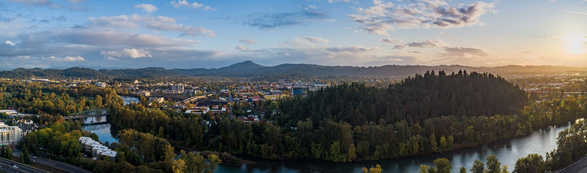

Welcome to the online portal for Eugene Oregon!
Figure 1
About:
Eugene is also known as "Track Town, USA". It has a long history of athletics, boasting international competitions and home to Hayward Field (Track stadium). The NCAA Division One University of Oregons' Ducks call Eugene home. The citizens of Eugene experience cool and rainy winters and warm and dry summers. Explore the city of Eugene by visiting the impressive Univeristy of Oregons campus. Or visit Pre's rock (a memorial to the late Steve Prefontaine) for more information about "Track Towns" namesake/history. Learn about the history of Eugene and the resources available to you.
Eugene Quick Facts:
- Eugene has a population of 179,887 and a metro population of 382,971
- It was incorporated in 1846
- It is located in the western region of the state
- It is an sprawling suburban college town
- The median income is $35,850
In figure 1, we have a beautiful aerial shot of Eugene Oregon.